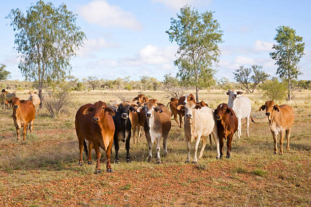

เครื่องมือดูแลโคเนื้อ
ดูแลโคให้ดี
ดูแลโคให้ดี
เริ่มจากข้อมูลที่เข้าใจง่าย
ประเมินคะแนนความสมบูรณ์ร่างกาย BCS จากรูปและจุดสังเกต พร้อมวางแผนอาหารให้เหมาะกับโคของคุณ

🐄
ใส่ใจสุขภาพโคทุกวันประเมิน · วางแผน · ดูแล
BODY CONDITION SCORE
01 / 03ประเมิน BCS
คะแนนนี้ต้องดูรูปร่างและคลำจุดสะสมไขมัน ไม่สามารถคำนวณจากน้ำหนักหรืออายุเพียงอย่างเดียว
PHOTO ASSISTช่วยประเมิน BCS จากรูปเพิ่มรูปเพื่อช่วยสังเกต แล้วตอบคำถาม 4 ข้อ
1. เพิ่มรูปโครูปด้านข้างจำเป็น · รูปด้านหลังช่วยให้ประเมินครบขึ้น
ⓘ รูปช่วยให้สังเกตได้ง่ายขึ้น คะแนนคำนวณจากคำตอบที่เลือก ไม่ได้วิเคราะห์ภาพอัตโนมัติ · ถ่ายตอนโคยืนตัวตรง แสงสว่าง และเห็นทั้งตัว
2. เลือกสิ่งที่เห็นจากรูปตอบแล้ว 0/4 ข้อ · เลือก 1 คำตอบในแต่ละข้อ
1 ซี่โครงในรูปด้านข้าง
2 สันหลังและปุ่มสะโพก
3 บริเวณโคนหาง
4 รูปร่างโดยรวม